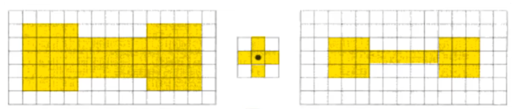
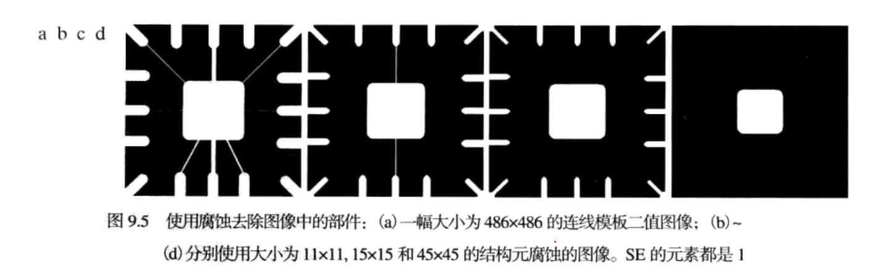
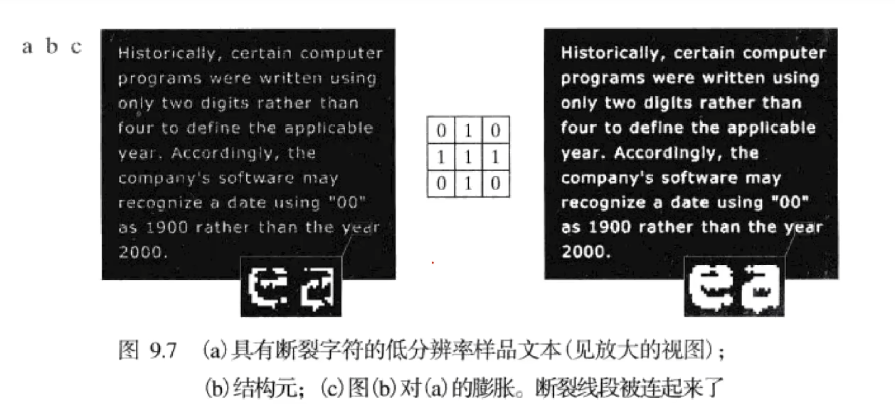
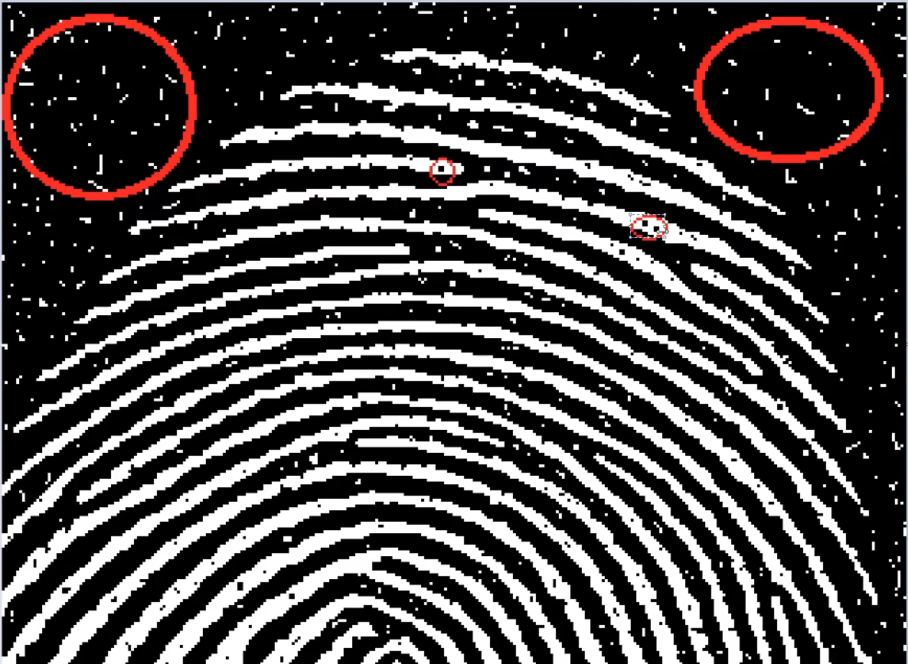
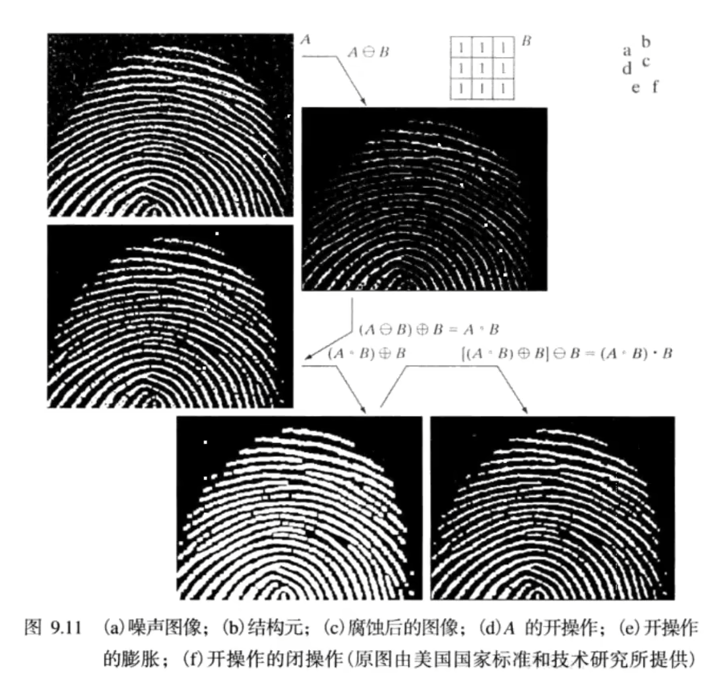

一、形态学图像处理算法
所谓形态学图像处理，就是将数学形态学作为工具，从图像中提取用于表达和描绘区域形状的图像成分，如边界、骨架等。
形态学图像处理算法的主要应用场景有以下几点：
- 边沿检测
- 形态学滤波
- 骨架检测
二、腐蚀和膨胀
腐蚀和膨胀是形态学中最基础的两种算法。
2.1 腐蚀
在谈论腐蚀运算的时候，我们通常认为至少有两个对象，其中一个是结构单元，相当于一个“吸血鬼”；另一个是被腐蚀的图形A，相当于“吸血鬼的可活动区域”。易得：如果想要使结构单元一直处于被腐蚀的图形内，结构单元的中心点将围成一个与原图形类似的区域B，且这个新的区域B一定比被腐蚀的图形区域A小。区域A和区域B作异或运算，就可以得到区域A的边界了。
在计算机视觉系统中，结构单元的移动并不是连续的，而是根据像素离散地一步步移动的。结构单元可以是不同的形状，但是关键在于确定结构单元的中心点像素，并且结构单元的所有像素都必须处于区域A中。如果结构单元完全在区域A中，那么结构单元的中心点像素的位置就可以输出，这些中心点像素位置组成的图形即为区域B。

腐蚀缩小或者细化了二值图像中的物体。同时，腐蚀可以看成形态学的滤波操作，这种操作将小于结构单元的图像细节从图像中滤除。

2.2 膨胀
膨胀过程实际上就是腐蚀的相反过程，即保证结构单元有一部分与被膨胀的区域重叠A即可。实际算法实现中，我们将结构单元遍历所有的像素点，并且将符合要求的像素点输出出来，得到的区域即为膨胀之后的区域。
一个常见的应用场景是，当一个图片的一些细节（字符）有断裂，我们就可以使用一个结构单元对图像进行膨胀运算。

三、开操作和闭操作
在实际的使用中，腐蚀和膨胀一般都不会单独使用，而是会相互结合。二者不同的先后执行顺序会对图像有两种不同的效果：
- 开操作：先腐蚀，后膨胀。适用场景：平滑物体的轮廓，断开较窄的狭颈，并消除细小的突出物。
- 闭操作：先膨胀，后腐蚀。使用场景：同样会平滑物体轮廓的一部分，但是与开操作相反，它通常会弥合较窄的间断和细长的沟壑，消除小的空洞，填补轮廓线中的断裂。

两种操作各有优缺点。以指纹图像的识别为例，开操作虽然消除了图像中所有的噪声，但是会导致指纹图像出现新的断裂。为了弥补这种现象，我们可以对开操作之后的图像再执行一次闭操作，这样就有可能获得一个较为清除明晰的图像。

About this Post
This post is written by Yun Zhang, licensed under CC BY-NC 4.0.